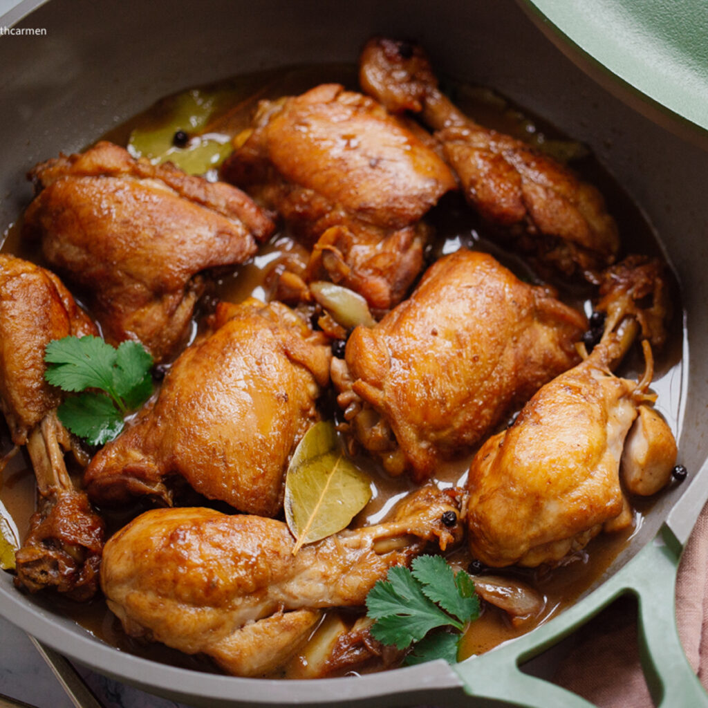

Chicken Adobo

Eat With Carmen Recipe
The unofficial national dish of the Philippines! Adobo refers to a
cooking style, so this can theoretically be done with any meat but is
most commonly done with chicken or pork. The meat is simmered in a soy
and vinegar sauce and is commonly served with white rice.
- 8-10 skinless chicken thighs
- Half cup of water or chicken stock
- Half cup of white or apple cider vinegar
- Third cup low-sodium soy sauce
- 2 tablespoons of brown sugar
- 6 cloves of garlic
- 1 tablespoon of black peppercorn
- 4 bay leaves
- 1 teaspoon of avocado oil
- Crushed salt and pepper
- Heat avocado oil in a pan, brown chicken on both sides and lightly
season with salt and pepper. Remove chicken when browned.
- Use paper towels to remove excess oil from the pan.
- Add garlic and black peppercorns to the pan, sauté for a minute
until fragrant
- Stir in soy sauce, vinegar, water, sugar, and bay leaves then
return chicken to the pan. Bring to a boil then reduce to low-medium
simmer and cover the pan. Cook for 20 minutes.
- Remove the lid and increase heat to high for about 5 minutes to
reduce the braising liquid to whatever consistency is desired.